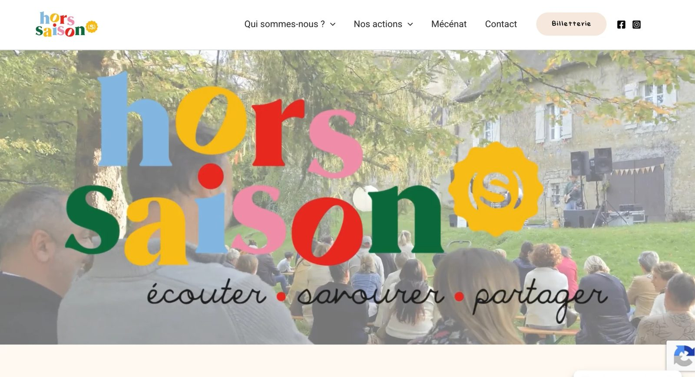

Référence · Association culturelle
Hors Saison(s)
Hors Saison(s) est une association qui organise des concerts itinérants. Je les ai accompagnés pour repenser toute leur stratégie digitale.

Le contexte
Faire connaître des concerts itinérants
Une association culturelle qui change de lieu à chaque concert doit pouvoir compter sur une communication claire et régulière pour rassembler son public.
Hors Saison(s) avait besoin de revoir sa stratégie digitale, ses réseaux sociaux et son site internet.
Mes missions
Ce que j’ai réalisé
- Refonte de la stratégie digitale
- Réseaux sociaux : Instagram en priorité, et Facebook
- Élaboration et mise en place d’un plan de communication
- Refonte complète du site internet
Les résultats
Des événements qui font le plein
Grâce à cette nouvelle stratégie, Hors Saison(s) a réussi à remplir chacun de ses événements, et les objectifs fixés ont été atteints dans la grande majorité des cas.

Et si c’était votre tour ?
Parlez-moi de votre projet : nous verrons ensemble comment vous aider à atteindre vos objectifs.